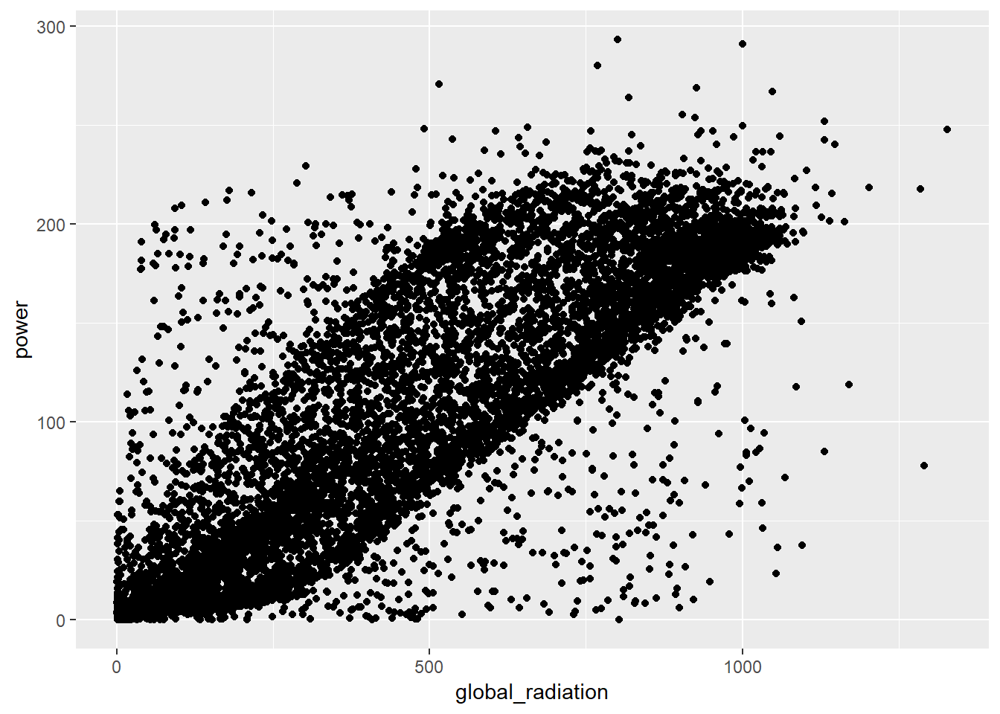

1 Modelo base.
1.1 Datos.
1.2 Importación de tablas de datos
# Carga de librerías
library(tidyverse)
library(data.table)##
## Attaching package: 'data.table'## The following objects are masked from 'package:dplyr':
##
## between, first, last## The following object is masked from 'package:purrr':
##
## transposelibrary(lubridate)##
## Attaching package: 'lubridate'## The following objects are masked from 'package:data.table':
##
## hour, isoweek, mday, minute, month, quarter, second, wday,
## week, yday, year## The following object is masked from 'package:base':
##
## datelibrary(GGally)## Registered S3 method overwritten by 'GGally':
## method from
## +.gg ggplot2##
## Attaching package: 'GGally'## The following object is masked from 'package:dplyr':
##
## nasalibrary(gridExtra)##
## Attaching package: 'gridExtra'## The following object is masked from 'package:dplyr':
##
## combinelibrary(knitr)
# Librerías para el modelado
library(caret)## Loading required package: lattice##
## Attaching package: 'caret'## The following object is masked from 'package:purrr':
##
## liftlibrary(ranger)Importo todas las tablas con la información de producción y meteorología. Los datos meteorológicos los separo en dos datasets, el primero del año 2014 al 2017 para el entrenamiento y validación del modelo y el segundo con los datos de 2018 para tomar como datos de entrada para la predicción final.
meteo_files <- list.files(path = "data", pattern = "sunlab-faro-meteo")
data_chr <- rep("data/", length(meteo_files))
meteo_files <- paste0(data_chr,meteo_files)
meteo_data <- meteo_files %>% map_df(~fread(.)) %>% as_tibble()
meteo_data_14_17 <- meteo_data %>% filter(year(Datetime) < 2018) %>% as_tibble()
meteo_data_18 <- meteo_data %>% filter(year(Datetime) == 2018) %>% as_tibble()
production_files <- list.files(path = "data", pattern = "sunlab-faro-pv")
data_chr <- rep("data/", length(production_files))
production_files <- paste0(data_chr,production_files)
production_data <- production_files %>% map_df(~fread(.)) %>% as_tibble()Necesitamos un modelo que prediga la producción del módulo solar B en su orientación óptima. Así que en principio sólo nos tenemos que quedar con la variable B_Optimal - Power DC [W] del dataset “production_data” (también nos quedamos con la variable “Datetime”, que nos permitirá cruzar esta tabla con la que contiene los datos meteorológicos).
production_data_optimal_b <- production_data %>% select(Datetime, `B_Optimal - Power DC [W]`)Echamos un vistazo a las variables meteorológicas.
summary(meteo_data_14_17)## Datetime Ambient Temperature [ºC] Global Radiation [W/m2]
## Length:1886655 Min. :-1.500e+09 Min. : 0.7285
## Class :character 1st Qu.: 1.400e+01 1st Qu.: 1.5651
## Mode :character Median : 1.800e+01 Median : 10.1154
## Mean :-7.137e+03 Mean : 231.2153
## 3rd Qu.: 2.300e+01 3rd Qu.: 437.6787
## Max. : 3.800e+01 Max. :1484.3798
##
## Diffuse Radiation [W/m2] Ultraviolet [W/m2] Wind Velocity [m/s]
## Min. : 1.6 Min. : 0.4954 Min. :-1.500e+09
## 1st Qu.: 1.7 1st Qu.: 0.5106 1st Qu.: 1.000e+00
## Median : 9.9 Median : 1.2513 Median : 2.000e+00
## Mean : 64.7 Mean :14.1992 Mean :-7.153e+03
## 3rd Qu.: 98.0 3rd Qu.:25.1983 3rd Qu.: 3.000e+00
## Max. :776.6 Max. :85.5154 Max. : 1.500e+01
## NA's :399744
## Wind Direction [º] Precipitation [mm] Atmospheric pressure [hPa]
## Min. : 0.0 Min. :0 Min. :-1.500e+09
## 1st Qu.:124.2 1st Qu.:0 1st Qu.: 1.013e+03
## Median :237.5 Median :0 Median : 1.016e+03
## Mean :214.2 Mean :0 Mean :-4.106e+03
## 3rd Qu.:298.3 3rd Qu.:0 3rd Qu.: 1.020e+03
## Max. :360.0 Max. :2 Max. : 1.036e+03
## NA's :1301023 NA's :1301023
## Direct Radiation [W/m2]
## Min. : 1.6
## 1st Qu.: 1.7
## Median : 8.6
## Mean : 63.9
## 3rd Qu.: 91.9
## Max. :790.1
## NA's :1486911summary(meteo_data_18)## Datetime Ambient Temperature [ºC] Global Radiation [W/m2]
## Length:10079 Min. : 5.100 Min. : 0.9146
## Class :character 1st Qu.: 9.117 1st Qu.: 1.5885
## Mode :character Median :11.583 Median : 2.2009
## Mean :11.764 Mean :106.7527
## 3rd Qu.:14.500 3rd Qu.:144.7449
## Max. :19.200 Max. :718.0579
##
## Diffuse Radiation [W/m2] Ultraviolet [W/m2] Wind Velocity [m/s]
## Min. : 1.597 Min. : 0.4973 Min. :0.000
## 1st Qu.: 1.659 1st Qu.: 0.5087 1st Qu.:1.683
## Median : 2.063 Median : 0.5153 Median :2.450
## Mean : 35.135 Mean : 6.2665 Mean :2.497
## 3rd Qu.: 59.762 3rd Qu.: 9.4911 3rd Qu.:3.167
## Max. :368.154 Max. :35.2159 Max. :7.917
##
## Wind Direction [º] Precipitation [mm] Atmospheric pressure [hPa]
## Min. : 0.0 Min. :0.00e+00 Min. :1000
## 1st Qu.:270.6 1st Qu.:0.00e+00 1st Qu.:1003
## Median :311.2 Median :0.00e+00 Median :1029
## Mean :277.9 Mean :9.92e-05 Mean :1020
## 3rd Qu.:323.2 3rd Qu.:0.00e+00 3rd Qu.:1032
## Max. :359.8 Max. :1.00e+00 Max. :1035
##
## Direct Radiation [W/m2]
## Min. : NA
## 1st Qu.: NA
## Median : NA
## Mean :NaN
## 3rd Qu.: NA
## Max. : NA
## NA's :10079Y para este modelo cortamos por lo sano y nos quedamos sólo con las variables que no presentan valores nulos en los datos de entrenamiento.
meteo_data_14_17_global_rad <- meteo_data_14_17 %>% select(Datetime,
`Global Radiation [W/m2]`,
`Ambient Temperature [ºC]`,
`Ultraviolet [W/m2]`,
`Wind Velocity [m/s]`,
`Wind Direction [º]`) 1.3 Modelo base
Cruzamos ambos datasets con la ayuda de la variable Datetime. Nos aseguramos de que no haya ningún valor nulo y renombramos las variables.
data <- left_join(production_data_optimal_b, meteo_data_14_17_global_rad, by = "Datetime") %>% na.omit()
data <- data %>% rename(global_radiation = `Global Radiation [W/m2]`,
power = `B_Optimal - Power DC [W]`,
temp = `Ambient Temperature [ºC]`,
wind_vel = `Wind Velocity [m/s]`,
wind_dir = `Wind Direction [º]`,
ultra_vi = `Ultraviolet [W/m2]`)Echamos un vistazo gráficamente a la relación entre la energía producida y la radiación solar (sólo utilizamos una parte reducida de los datos para que “pinte” el gráfico rápidamente). Y como es de esperar la relación es clara y positiva.
set.seed <- 42
sample_data <- sample_n(data, 10000)
ggplot(data = sample_data, aes(x = global_radiation, y = power)) +
geom_point()
Y pasamos a generar el modelo y a evaluarlo.
data <- data %>% select(-Datetime)
set.seed(42)
trainIndex <- createDataPartition(data$power, p = .9,
list = FALSE,
times = 1)
train_data <- data[trainIndex,]
validation_data <- data[-trainIndex,]
X_validation_data <- validation_data %>% select(-power)
y_validation_data <- validation_data %>% select(power)
# Generamos un modelo con un random forest de solo 100 árboles con el paquete Ranger. Utilizamos los valores por defecto de todos sus parámetros.
rf_mod <- ranger(power ~ .,
data = train_data,
num.trees = 100,
seed = 42)
# Generamos una predicción con el modelo generado con los datos de validación
prediction <- predict(rf_mod, X_validation_data)
y_validation_data <- c(y_validation_data$power)
prediction <- c(prediction$predictions)
# Y lo evaluamos obteniendo el MAE y el R cuadrado.
MAE <- MAE(y_validation_data, prediction)
MAE
r_squared <- R2(prediction,y_validation_data)
r_squaredCon este modelo obtenemos un MAE de 15,92 y un R cuadrado de 0,87
[1] 15.92131 [1] 0.8684656
Utilizamos el modelo resultante para generar mi primera predicción.
# Generamos el dataset para la predicción
pred_data <- meteo_data_18 %>% rename(global_radiation = `Global Radiation [W/m2]`,
temp = `Ambient Temperature [ºC]`,
wind_vel = `Wind Velocity [m/s]`,
wind_dir = `Wind Direction [º]`,
ultra_vi = `Ultraviolet [W/m2]`) %>%
arrange(Datetime) %>%
select(global_radiation, temp, wind_vel, wind_dir, ultra_vi)
prediction <- predict(rf_mod, pred_data)
predictions <- prediction$predictions %>%
as.data.frame()
colnames(predictions) <- "B_Optimal - Power DC [W]"
Datetime <- meteo_data_18 %>% select(Datetime) %>% arrange(Datetime)
submission_01 <- bind_cols(Datetime, predictions)
write_csv(submission_01, "submission_01.csv")En el primer envío me devolvió un error. El problema es que no hay que enviar las predicciones para todos los registros disponibles de 2018, sino únicamente los que trae el template. Así que generamos de nuevo el csv, pero esta vez cruzandolo con el archivo “Solar_Template.csv”.
template <- read_delim("data/Solar_Template.csv", delim = ";") %>% select(Datetime)
submission_01 <- read_csv("submission_01.csv")
submission_02 <- template %>% left_join(submission_01, by = "Datetime")
write_csv(submission_02, "submission_02.csv")These are the results from my base model for this challenge. I used for this model the features with less number of NAs: Global Radiation [W/m2], Ambient Temperature [ºC], Ultraviolet [W/m2], Wind Velocity [m/s] and Wind Direction [º])
I applied a random forest of just 100 trees to the data. I used the ranger package on R.
rf_mod <- ranger(power ~ .,
data = train_data,
num.trees = 100,
splitrule = “variance”,
min.node.size = 5,
seed = 42)